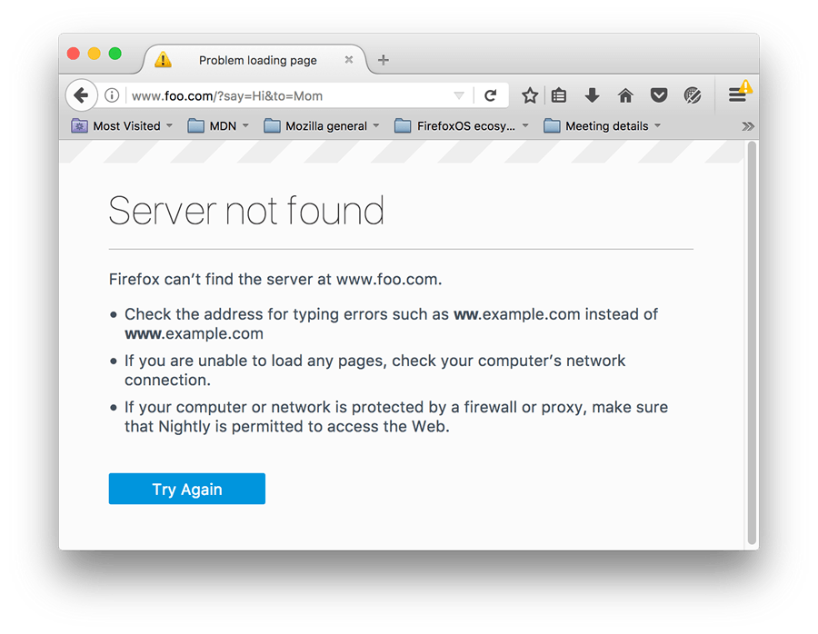
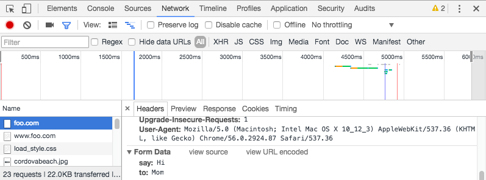

This article looks at what happens when a user submits a form — where does the data go, and how do we handle it when it gets there? We also look at some of the security concerns associated with sending form data.
| Prerequisites: | Basic computer literacy, an understanding of HTML, and basic knowledge of HTTP and server-side programming. |
|---|---|
| Objective: | To understand what happens when form data is submitted, including getting a basic idea of how data is processed on the server |
Where does the data go?
Here we'll discuss what happens to the data when a form is submitted.
About client/server architecture
The web is based on a very basic client/server architecture that can be summarized as follows: a client (usually a Web browser) sends a request to a server (most of the time a web server like Apache, Nginx, IIS, Tomcat, etc.), using the HTTP protocol. The server answers the request using the same protocol.

On the client side, an HTML form is nothing more than a convenient user-friendly way to configure an HTTP request to send data to a server. This enables the user to provide information to be delivered in the HTTP request.
Note: To get a better idea of how client-server architectures work, read our Server-side website programming first steps module.
On the client side: defining how to send the data
The <form> element defines how the data will be sent. All of its attributes are designed to let you configure the request to be sent when a user hits a submit button. The two most important attributes are action and method.
The action attribute
This attribute defines where the data gets sent. Its value must be a valid URL. If this attribute isn't provided, the data will be sent to the URL of the page containing the form.
In this example, the data is sent to an absolute URL — http://foo.com:
<form action="http://foo.com">
Here, we use a relative URL — the data is sent to a different URL on the server:
<form action="/somewhere_else">
When specified with no attributes, as below, the <form> data is sent to the same page that the form is present on:
<form>
Many older pages use the following notation to indicate that the data should be sent to the same page that contains the form; this was required because until HTML5, the action attribute was required. This is no longer needed.
<form action="#">
Note: It's possible to specify a URL that uses the HTTPS (secure HTTP) protocol. When you do this, the data is encrypted along with the rest of the request, even if the form itself is hosted on an insecure page accessed using HTTP. On the other hand, if the form is hosted on a secure page but you specify an insecure HTTP URL with the action attribute, all browsers display a security warning to the user each time they try to send data because the data will not be encrypted.
The method attribute
This attribute defines how data is sent. The HTTP protocol provides several ways to perform a request; HTML form data can be transmitted via a number of different ones, the most common of which are the GET method and the POST method.
To understand the difference between those two methods, let's step back and examine how HTTP works. Each time you want to reach a resource on the Web, the browser sends a request to a URL. An HTTP request consists of two parts: a header that contains a set of global metadata about the browser's capabilities, and a body that can contain information necessary for the server to process the specific request.
The GET method
The GET method is the method used by the browser to ask the server to send back a given resource: "Hey server, I want to get this resource." In this case, the browser sends an empty body. Because the body is empty, if a form is sent using this method the data sent to the server is appended to the URL.
Consider the following form:
<form action="http://foo.com" method="get">
<div>
<label for="say">What greeting do you want to say?</label>
<input name="say" id="say" value="Hi">
</div>
<div>
<label for="to">Who do you want to say it to?</label>
<input name="to" id="to" value="Mom">
</div>
<div>
<button>Send my greetings</button>
</div>
</form>
Since the GET method has been used, you'll see the URL www.foo.com/?say=Hi&to=Mom appear in the browser address bar when you submit the form.
The data is appended to the URL as a series of name/value pairs. After the URL web address has ended, we include a question mark (?) followed by the name/value pairs, each one separated by an ampersand (&). In this case we are passing two pieces of data to the server:
say, which has a value ofHito, which has a value ofMom
The HTTP request looks like this:
GET /?say=Hi&to=Mom HTTP/2.0 Host: foo.com
Note: You can find this example on GitHub — see get-method.html (see it live also).
The POST method
The POST method is a little different. It's the method the browser uses to talk to the server when asking for a response that takes into account the data provided in the body of the HTTP request: "Hey server, take a look at this data and send me back an appropriate result." If a form is sent using this method, the data is appended to the body of the HTTP request.
Let's look at an example — this is the same form we looked at in the GET section above, but with the method attribute set to post.
<form action="http://foo.com" method="post">
<div>
<label for="say">What greeting do you want to say?</label>
<input name="say" id="say" value="Hi">
</div>
<div>
<label for="to">Who do you want to say it to?</label>
<input name="to" id="to" value="Mom">
</div>
<div>
<button>Send my greetings</button>
</div>
</form>
When the form is submitted using the POST method, you get no data appended to the URL, and the HTTP request looks like so, with the data included in the request body instead:
POST / HTTP/2.0 Host: foo.com Content-Type: application/x-www-form-urlencoded Content-Length: 13 say=Hi&to=Mom
The Content-Length header indicates the size of the body, and the Content-Type header indicates the type of resource sent to the server. We'll discuss these headers later on.
Note: You can find this example on GitHub — see post-method.html (see it live also).
Viewing HTTP requests
HTTP requests are never displayed to the user (if you want to see them, you need to use tools such as the Firefox Network Monitor or the Chrome Developer Tools). As an example, your form data will be shown as follows in the Chrome Network tab. After submitting the form:
- Press F12
- Select "Network"
- Select "All"
- Select "foo.com" in the "Name" tab
- Select "Headers"
You can then get the form data, as shown in the image below.

The only thing displayed to the user is the URL called. As we mentioned above, with a GET request the user will see the data in their URL bar, but with a POST request they won't. This can be very important for two reasons:
- If you need to send a password (or any other sensitive piece of data), never use the
GETmethod or you risk displaying it in the URL bar, which would be very insecure. - If you need to send a large amount of data, the
POSTmethod is preferred because some browsers limit the sizes of URLs. In addition, many servers limit the length of URLs they accept.
On the server side: retrieving the data
Whichever HTTP method you choose, the server receives a string that will be parsed in order to get the data as a list of key/value pairs. The way you access this list depends on the development platform you use and on any specific frameworks you may be using with it. The technology you use also determines how duplicate keys are handled; often, the most recently received value for a given key is given priority.
Example: Raw PHP
PHP offers some global objects to access the data. Assuming you've used the POST method, the following example just takes the data and displays it to the user. Of course, what you do with the data is up to you. You might display it, store it into a database, send it by email, or process it in some other way.
<?php // The global $_POST variable allows you to access the data sent with the POST method by name // To access the data sent with the GET method, you can use $_GET $say = htmlspecialchars($_POST['say']); $to = htmlspecialchars($_POST['to']); echo $say, ' ', $to; ?>
This example displays a page with the data we sent. You can see this in action in our example php-example.html file — which contains the same example form as we saw before, with a method of post and an action of php-example.php. When it is submitted, it sends the form data to php-example.php, which contains the PHP code seen in the above block. When this code is executed, the output in the browser is Hi Mom.

Note: This example won't work when you load it into a browser locally — browsers cannnot interpret PHP code, so when the form is submitted the browser will just offer to download the PHP file for you. To get it to work, you need to run the example through a PHP server of some kind. Good options for local PHP testing are MAMP (Mac and Windows) and AMPPS (Mac, Windows, Linux).
Example: Python
This example shows how you would use Python to do the same thing — display the submitted data on a web page. This uses the Flask framework for rendering the templates, handling the form data submission, etc (see python-example.py).
from flask import Flask, render_template, request
app = Flask(__name__)
@app.route('/', methods=['GET', 'POST'])
def form():
return render_template('form.html')
@app.route('/hello', methods=['GET', 'POST'])
def hello():
return render_template('greeting.html', say=request.form['say'], to=request.form['to'])
if __name__ == "__main__":
app.run()
The two templates referenced in the above code are as follows:
- form.html: The same form as we saw above in the The POST method section but with the
actionset to{{ url_for('hello') }}. (This is a Jinja2 template, which is basically HTML but can contain calls to the Python code that is running the web server contained in curly braces.url_for('hello')is basically saying "redirect to/hellowhen the form is submitted".) - greeting.html: This template just contains a line that renders the two bits of data passed to it when it is rendered. This is done via the
hello()function seen above, which runs when the/helloURL is navigated to.
Note: Again, this code won't work if you just try to load it into a browser directly. Python works a bit differently to PHP — to run this code locally you'll need to install Python/PIP, then install Flask using pip3 install flask. At this point you should be able to run the example using python3 python-example.py, then navigating to localhost:5000 in your browser.
Other languages and frameworks
There are many other server-side technologies you can use for form handling, including Perl, Java, .Net, Ruby, etc. Just pick the one you like best. That said, it's worth noting that it's very uncommon to use these technologies directly because this can be tricky. It's more common to use one of the many nice frameworks that make handling forms easier, such as:
- Django for Python (a bit more heavyweight than Flask, but with more tools and options)
- Express for Node.js
- Laravel for PHP
- Ruby On Rails for Ruby
- Phoenix for Elixir
It's worth noting that even using these frameworks, working with forms isn't necessarily easy. But it's much easier than trying to write all the functionality yourself from scratch, and will save you a lot of time.
Note: It is beyond the scope of this article to teach you any server-side languages or frameworks. The links above will give you some help, should you wish to learn them.
A special case: sending files
Sending files with HTML forms is a special case. Files are binary data — or considered as such — whereas all other data is text data. Because HTTP is a text protocol, there are special requirements for handling binary data.
The enctype attribute
This attribute lets you specify the value of the Content-Type HTTP header included in the request generated when the form is submitted. This header is very important because it tells the server what kind of data is being sent. By default, its value is application/x-www-form-urlencoded. In human terms, this means: "This is form data that has been encoded into URL parameters."
If you want to send files, you need to take three extra steps:
- Set the
methodattribute toPOSTbecause file content can't be put inside URL parameters. - Set the value of
enctypetomultipart/form-databecause the data will be split into multiple parts, one for each file plus one for the text data included in the form body (if text is also entered into the form). - Include one or more File picker widgets to allow your users to select the file(s) that will be uploaded.
For example:
<form method="post" enctype="multipart/form-data">
<div>
<label for="file">Choose a file</label>
<input type="file" id="file" name="myFile">
</div>
<div>
<button>Send the file</button>
</div>
</form>
Note: Some browsers support the multiple attribute on the <input> element, which allows more than one file to be chosen for uploading with only one <input> element. How the server handles those files really depends on the technology used on the server. As mentioned previously, using a framework will make your life a lot easier.
Warning: Many servers are configured with a size limit for files and HTTP requests in order to prevent abuse. It's important to check this limit with the server administrator before sending a file.
Common security concerns
Each time you send data to a server, you need to consider security. HTML forms are by far the most common attack vectors (places where attacks can occur) against servers. The problems never come from the HTML forms themselves — they come from how the server handles data.
Depending on what you're doing, there are some very well-known security issues that you'll come up against:
XSS and CSRF
Cross-Site Scripting (XSS) and Cross-Site Request Forgery (CSRF) are common types of attacks that occur when you display data sent by a user back to the user or to another user.
XSS lets attackers inject client-side script into Web pages viewed by other users. A cross-site scripting vulnerability may be used by attackers to bypass access controls such as the same origin policy. The effect of these attacks may range from a petty nuisance to a significant security risk.
CSRF attacks are similar to XSS attacks in that they start the same way — by injecting client-side script into Web pages — but their target is different. CSRF attackers try to escalate privileges to those of a higher-privileged user (such as a site administrator) to perform an action they shouldn't be able to do (for example, sending data to an untrusted user).
XSS attacks exploit the trust a user has for a web site, while CSRF attacks exploit the trust a web site has for its users.
To prevent these attacks, you should always check the data a user sends to your server and (if you need to display it) try not to display HTML content as provided by the user. Instead, you should process the user-provided data so you don't display it verbatim. Almost all frameworks on the market today implement a minimal filter that removes the HTML <script>, <iframe> and <object> elements from data sent by any user. This helps to mitigate the risk, but doesn't necessarily eradicate it.
SQL injection
SQL injection is a type of attack that tries to perform actions on a database used by the target web site. This typically involves sending a SQL request in the hope that the server will execute it (usually when the application server tries to store data sent by a user). This is actually one of the main vector attacks against web sites.
The consequences can be terrible, ranging from data loss to attacks taking control of a whole website infrastructure by using privilege escalation. This is a very serious threat and you should never store data sent by a user without performing some sanitization (for example, by using mysqli_real_escape_string().
HTTP header injection and email injection
These kinds of attacks can occur when your application builds HTTP headers or emails based on the data input by a user on a form. These won't directly damage your server or affect your users, but they are an open door to deeper problems such as session hijacking or phishing attacks.
These attacks are mostly silent, and can turn your server into a zombie.
Be paranoid: Never trust your users
So, how do you fight these threats? This is a topic far beyond this guide, but there are a few rules to keep in mind. The most important rule is: never ever trust your users, including yourself; even a trusted user could have been hijacked.
All data that comes to your server must be checked and sanitized. Always. No exception.
- Escape potentially dangerous characters. The specific characters you should be cautious with vary depending on the context in which the data is used and the server platform you employ, but all server-side languages have functions for this.
- Limit the incoming amount of data to allow only what's necessary.
- Sandbox uploaded files (store them on a different server and allow access to the file only through a different subdomain or even better through a fully different domain name).
You should avoid many/most problems if you follow these three rules, but it's always a good idea to get a security review performed by a competent third party. Don't assume that you've seen all the possible problems.
Note: The Website security article of our server-side learning topic discusses the above threats and potential solutions in more detail.
Conclusion
As you can see, sending form data is easy, but securing an application can be tricky. Just remember that a front-end developer is not the one who should define the security model of the data. Yes, as we'll see, it's possible to perform client side data validation but the server can't trust this validation because it has no way to truly know what really happens on the client side.
See also
If you want to learn more about securing a web application, you can dig into these resources:
- Server-side website programming first steps
- The Open Web Application Security Project (OWASP)
- Web Security by Mozilla
In this module
- Your first HTML form
- How to structure an HTML form
- The native form widgets
- Sending form data
- Form data validation
- How to build custom form widgets
- Sending forms through JavaScript
- HTML forms in legacy browsers
- Styling HTML forms
- Advanced styling for HTML forms
- Property compatibility table for form widgets